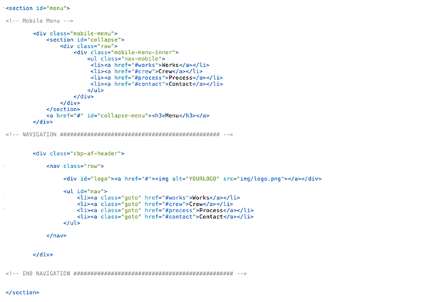

Created: 01 December 2013
By: Supview
Email: hello@iamsupview.be
Thank you for purchasing my theme. If you have any questions that are beyond the scope of this help file, please feel free to email via my user page contact form here. Thanks so much!
Table of Contents
A) HTML Structure - top
This theme is a one page portfolio. All of the information within the main content area is nested within a div with an id of "primaryContent". The general template structure is the same throughout the template. Here is the general structure looks like.
 Here is the structure of One Work
You can copy cut one of them for adding new work on the grid.
Concerning the Expander Preview
You can copy cut one of them for adding new expanding preview.
Don't forget if you add more than 8 works, you have always to add it on the onclick function.
As you can see, you can also edit the width of each columns and make display the work as you like! It's based on the Gumby Framework grid, you can see more informations here : Grid of Gumby Framework.
B) CSS Files and Structure - top
I'm using six CSS files in this theme.
There's always a table of content like this one
/* 00. FONT FACE 01. NAVIGATION 02. HEADER 03. INTRODUCTION 04. INTERSECTION ( TESTIMONIALS ) 05. CREW 06. WORKS GRID 07. CLIENTS 08. PROCESS 09. CONTACT INTERSECTION 10. CONTACT 11. FOOTER 12. MEDIA QUERIES */
The first one is animate.css, this one is used for the little easing effect when you scroll down.
You can use them easily with theses different class :
.make-it-appear-top
.make-it-appear-bottom
.make-it-appear-left
.make-it-appear-right
You have just to add it into your concerning code into the HTML
The second file named style.css contains all of the specific stylings for the page. The file is separated into sections using:
/* 03. NAVIGATION ================================================== */ some code /* 04. HEADER ================================================== */ some code /* 05.WORKS GRID ================================================== */ some code /* 06. INTERSECTION ================================================== */ some code
The thirth file named gumby.css is the framework that i'm using. you have nothing to touch there. It's for the row and column.
If you would like to edit a specific section of the site, simply find the appropriate label in the CSS file, and then scroll down until you find the appropriate style that needs to be edited.
The Fourth file named component.css is the stylesheet for the Slideshow of the Header.
The fifth file named liquid-slider.css is the stylesheet used for the Process Slider
The sixth file named owl-carousel is used for the grabbing effect into different section of the template (ex: Testimonials ).
Concerning the Parallax Background, you'll found them into the main stylesheet, they are noticed with this comment :
/* Parallax Background */
C) JavaScript - top
This theme imports fifteen Javascript files.
- jQuery 2.0.2
- jQuery Modernizr
- main.js
- waypoints.min.js
- jquery.parallax-1.1.3.js
- jquery.scrollto.js
- classie.js
- cbpBGSlideshow.min.js
- jquery.easing.1.3.js
- jquery.imagesloaded.min.js
- jquery.liquid-slider.js
- jquery.stellar.js
- jquery.touchSwipe.min.js
- owl.carousel.js
- grid.js
- jQuery is a Javascript library that greatly reduces the amount of code that you must write.
- Modernizr make an altenative for others navigators if they don't accept some code.
- main.js contain little script for making the always top navigation, smooth scrolling etc. This is where you setup most of the js library.
- waypoints.min.js is used for detect which section are you on and add the selected status on the navigation.
- jquery.parallax-1.1.3.js is used for the header background.
- jquery.scrollto.js is used for smooth scrolling
- classie.js is used for reduced height of the navigation when you scroll down.
- cbpBGSlideshow.min.js & jquery.imagesloaded.min.js is used for the Slideshow Background Header.
- jquery.easing.1.3.js is used for the easing efects.
- jjquery.liquid-slider.js is used for the Process Slider.
- jquery.stellar.js is used for the active status in the navigation and also for displaying different elements.
- owl.carousel.js is used for the grabbing slider
- grid.js is used for the works grid effect
E) Sources and Credits - top
I've used the following images, icons or other files as listed.
- Gumby Framework - http://www.gumbyframework.com
- Expander Preview like Applove - http://applove.se/
- Animate Stylesheet - https://daneden.me/animate/
- Works Items & Background Image from Supview - http://www.behance.net/Supview
- Team member from Koji Ishibashi - http://www.behance.net/gallery/Employee-profile-photo-for-Brooklyn-Boulders/4690841
- Liquid Slider - http://liquidslider.com/
- Blueprint Background Slider - http://tympanus.net/Blueprints/BackgroundSlideshow/
- Owl Carousel - http://owlgraphic.com/owlcarousel/
Once again, thank you so much for purchasing this theme. As I said at the beginning, I'd be glad to help you if you have any questions relating to this theme. No guarantees, but I'll do my best to assist. If you have a more general question relating to the themes on ThemeForest, you might consider visiting the forums and asking your question in the "Item Discussion" section.